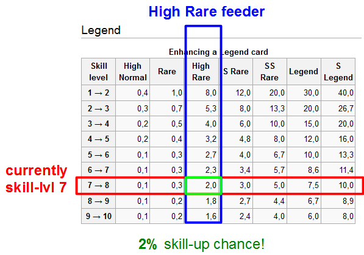

Skill boost probability
Contents
Introduction
You can increase a skill level of a card by enhancing it with Skill cards.
Below are the probabilities of obtaining a skill level, depending on the rarity of the card you want to enhance, and what you feed this card.
- As of now, the only cards that will add more to the probability are Devil Queen (Rare) (50%) and Devil Princess (High Normal) (20%).
- Skill leveling the feeder cards will also increase probability. So a Lv.2 Feeder is worth more than a Lv.1 Feeder, and so on.
A note about skill leveling feeder cards: Each additional skill level increases the skill up probability by half of the original skill-up probability (tested only for skill levels only 1-5). Skill Up Prob = base (level 1) skill up prob + .5*base*(skill level - 1). Therefore, the only time it is really advantageous to skill up feeder cards is if you are enhancing a legend or x-legend card with a high rare or s-rare card.
Calculator
You can use the table below, or this JavaScript calculator.
The owner of the above site needs to follow these instructions for the script to work. The RichTextArea-component got deprecated, so it has to be removed by the owner of the site and replaced by HTML-component. So everywhere he got the word “CreateRichTextArea” in his code, he should be “createHTML” and it should work. One or more functions might have to be removed also, but basically this should do the trick :-)
Try new JavaScript calculator here.
How to read this?
Choose the table depending on the card you want to enhance. For example if you want to skill-level a Legend, choose the Legend table. Every row in that table represents a different skill-level (skill-up chance decreases with rising skill-level). Every table column represents a type of skilled Feeder (from High Normal to S Legend).
Example:
- You want to skill up a Legend card => chose Legend table
- The card is currently at skill-level 7 => chose the 7 → 8 row
- You want to use a High Rare Feeder => chose the High Rare column
- You will find out, that you have a 2% chance to level up your Legend card with a single High Rare feeder (20% when you use 10 High Rare feeders)
- If your High Rare feeder is at skill level 2, the chance to level up increases to 3%.
Note that to skill level a high rare card with high normal cards, 8 high normal cards gives a 96% probability of skill up. By using these 8 high normal cards to skill up the high rare card, you have a combined total of 8 HN + 1 HR card = 3% skill up. If you applied these high normal cards to the legend card, you would get .1%*8 + 2% = 2.8%, so skill leveling the high rare card is slightly more effective. It is not wise to skill level a feeder past level 2 since it would be more effective at that point to directly enhance the final card.

Note: Graphic shows 'S Legend' prior to the release of Legend to X Legend cards.
X Legend
| Skill level | High Normal | Rare | High Rare | S Rare | SS Rare | Legend | X Legend |
|---|---|---|---|---|---|---|---|
| 1 → 2 | 0.4 | 1.0 | 8.0 | 12.0 | 20.0 | 30.0 | |
| 2 → 3 | 0.7 | 0.7 | 5.3 | 8.0 | 13.3 | 20.0 | |
| 3 → 4 | 0.5 | 0.5 | 4.0 | 6.0 | 10.0 | 15.0 | |
| 4 → 5 | 0.4 | 0.4 | 3.2 | 4.8 | 8.0 | 12.0 | |
| 5 → 6 | 0.3 | 0.3 | 2.7 | 4.0 | 6.7 | 10.0 | |
| 6 → 7 | 0.3 | 0.3 | 2.3 | 3.4 | 5.7 | 8.6 | |
| 7 → 8 | 0.3 | 0.3 | 2.0 | 3.0 | 5.0 | 7.5 | |
| 8 → 9 | 0.2 | 0.2 | 1.8 | 2.7 | 4.4 | 6.7 | |
| 9 → 10 | 0.2 | 0.2 | 1.6 | 2.4 | 4.0 | 6.0 |
Legend
| Skill level | High Normal | Rare | High Rare | S Rare | SS Rare | Legend | X Legend |
|---|---|---|---|---|---|---|---|
| 1 → 2 | 0.4 | 1.0 | 8.0 | 12.0 | 20.0 | 30.0 | 40.0 |
| 2 → 3 | 0.3 | 0.7 | 5.3 | 8.0 | 13.3 | 20.0 | 26.7 |
| 3 → 4 | 0.2 | 0.5 | 4.0 | 6.0 | 10.0 | 15.0 | 20.0 |
| 4 → 5 | 0.2 | 0.4 | 3.2 | 4.8 | 8.0 | 12.0 | 16.0 |
| 5 → 6 | 0.1 | 0.3 | 2.7 | 4.0 | 6.7 | 10.0 | 13.3 |
| 6 → 7 | 0.1 | 0.3 | 2.3 | 3.4 | 5.7 | 8.6 | 11.4 |
| 7 → 8 | 0.1 | 0.3 | 2.0 | 3.0 | 5.0 | 7.5 | 10.0 |
| 8 → 9 | 0.1 | 0.2 | 1.8 | 2.7 | 4.4 | 6.7 | 8.9 |
| 9 → 10 | 0.1 | 0.2 | 1.6 | 2.4 | 4.0 | 6.0 | 8.0 |
SS Rare
| Skill level | High Normal | Rare | High Rare | S Rare | SS Rare | Legend | X Legend |
|---|---|---|---|---|---|---|---|
| 1 → 2 | 1.0 | 8.0 | 12.0 | 20.0 | 30.0 | 40.0 | 80.0 |
| 2 → 3 | 0.7 | 5.3 | 8.0 | 13.3 | 20.0 | 26.7 | 53.3 |
| 3 → 4 | 0.5 | 4.0 | 6.0 | 10.0 | 15.0 | 20.0 | 40.0 |
| 4 → 5 | 0.4 | 3.2 | 4.8 | 8.0 | 12.0 | 16.0 | 32.0 |
| 5 → 6 | 0.3 | 2.7 | 4.0 | 6.7 | 10.0 | 13.3 | 26.7 |
| 6 → 7 | 0.3 | 2.3 | 3.4 | 5.7 | 8.6 | 11.4 | 22.9 |
| 7 → 8 | 0.3 | 2.0 | 3.0 | 5.0 | 7.5 | 10.0 | 20.0 |
| 8 → 9 | 0.2 | 1.8 | 2.7 | 4.4 | 6.7 | 8.9 | 17.8 |
| 9 → 10 | 0.2 | 1.6 | 2.4 | 4.0 | 6.0 | 8.0 | 16.0 |
S Rare
| Skill level | High Normal | Rare | High Rare | S Rare | SS Rare | Legend | X Legend |
|---|---|---|---|---|---|---|---|
| 1 → 2 | 8.0 | 12.0 | 20.0 | 30.0 | 40.0 | 80.0 | 100.0 |
| 2 → 3 | 5.3 | 8.0 | 13.3 | 20.0 | 26.7 | 53.3 | 80.0 |
| 3 → 4 | 4.0 | 6.0 | 10.0 | 15.0 | 20.0 | 40.0 | 60.0 |
| 4 → 5 | 3.2 | 4.8 | 8.0 | 12.0 | 16.0 | 32.0 | 48.0 |
| 5 → 6 | 2.7 | 4.0 | 6.7 | 10.0 | 13.3 | 26.7 | 40.0 |
| 6 → 7 | 2.3 | 3.4 | 5.7 | 8.6 | 11.4 | 22.9 | 34.3 |
| 7 → 8 | 2.0 | 3.0 | 5.0 | 7.5 | 10.0 | 20.0 | 30.0 |
| 8 → 9 | 1.8 | 2.7 | 4.4 | 6.7 | 8.9 | 17.8 | 26.7 |
| 9 → 10 | 1.6 | 2.4 | 4.0 | 6.0 | 8.0 | 16.0 | 24.0 |
High Rare
| Skill level | High Normal | Rare | High Rare | S Rare | SS Rare | Legend | X Legend |
|---|---|---|---|---|---|---|---|
| 1 → 2 | 12.0 | 20.0 | 30.0 | 40.0 | 80.0 | 100.0 | 100 |
| 2 → 3 | 8.0 | 13.3 | 20.0 | 26.7 | 53.3 | 80.0 | |
| 3 → 4 | 6.0 | 10.0 | 15.0 | 20.0 | 40.0 | 60.0 | |
| 4 → 5 | 4.8 | 8.0 | 12.0 | 16.0 | 32.0 | 48.0 | |
| 5 → 6 | 4.0 | 6.7 | 10.0 | 13.3 | 26.7 | 40.0 | |
| 6 → 7 | 3.4 | 5.7 | 8.6 | 11.4 | 22.9 | 34.3 | |
| 7 → 8 | 3.0 | 5.0 | 7.5 | 10.0 | 20.0 | 30.0 | |
| 8 → 9 | 2.7 | 4.4 | 6.7 | 8.9 | 17.8 | 26.7 | |
| 9 → 10 | 2.4 | 4.0 | 6.0 | 8.0 | 16.0 | 24.0 |
Rare
| Skill level | High Normal | Rare | High Rare | S Rare | SS Rare | Legend | X Legend |
|---|---|---|---|---|---|---|---|
| 1 → 2 | 20.0 | 30.0 | 40.0 | 80.0 | 100.0 | 100 | 100 |
| 2 → 3 | 13.3 | 20.0 | 26.7 | 53.3 | 80.0 | ||
| 3 → 4 | 10.0 | 15.0 | 20.0 | 40.0 | 60.0 | ||
| 4 → 5 | 8.0 | 12.0 | 16.0 | 32.0 | 48.0 | ||
| 5 → 6 | 6.7 | 10.0 | 13.3 | 26.7 | 40.0 | ||
| 6 → 7 | 5.8 | 8.6 | 11.4 | 22.9 | 34.3 | ||
| 7 → 8 | 5.0 | 7.5 | 10.0 | 20.0 | 30.0 | ||
| 8 → 9 | 4.4 | 6.7 | 8.9 | 17.8 | 26.7 | ||
| 9 → 10 | 4.0 | 6.0 | 8.0 | 16.0 | 24.0 | 32.0 |
High Normal
| Skill level | High Normal | Rare | High Rare | S Rare | SS Rare | Legend | X Legend |
|---|---|---|---|---|---|---|---|
| 1 → 2 | 30.0 | 40.0 | 80.0 | 100.0 | 100 | 100 | 100 |
| 2 → 3 | 20.0 | 26.7 | 53.3 | 80.0 | |||
| 3 → 4 | 15.0 | 20.0 | 40.0 | 60.0 | |||
| 4 → 5 | 12.0 | 16.0 | 32.0 | 48.0 | |||
| 5 → 6 | 10.0 | 13.3 | 26.7 | 40.0 | |||
| 6 → 7 | 8.6 | 11.4 | 22.9 | 34.3 | |||
| 7 → 8 | 7.5 | 10.0 | 20.0 | 30.0 | |||
| 8 → 9 | 6.7 | 8.9 | 17.8 | 26.7 | |||
| 9 → 10 | 6.0 | 8.0 | 16.0 | 24.0 |